JSVisualizer is a web app for learning how a JavaScript program runs step by step, by watching it through a variety of visualizations.
- Just open https://tntetsu.github.io/JSVisualizer/ in an up-to-date desktop browser (Chrome, Edge, Firefox, Safari, etc.). No installation or sign-in is needed.
- All code runs inside your browser. Your code and your operations are never sent to a server.
1. Screen layout
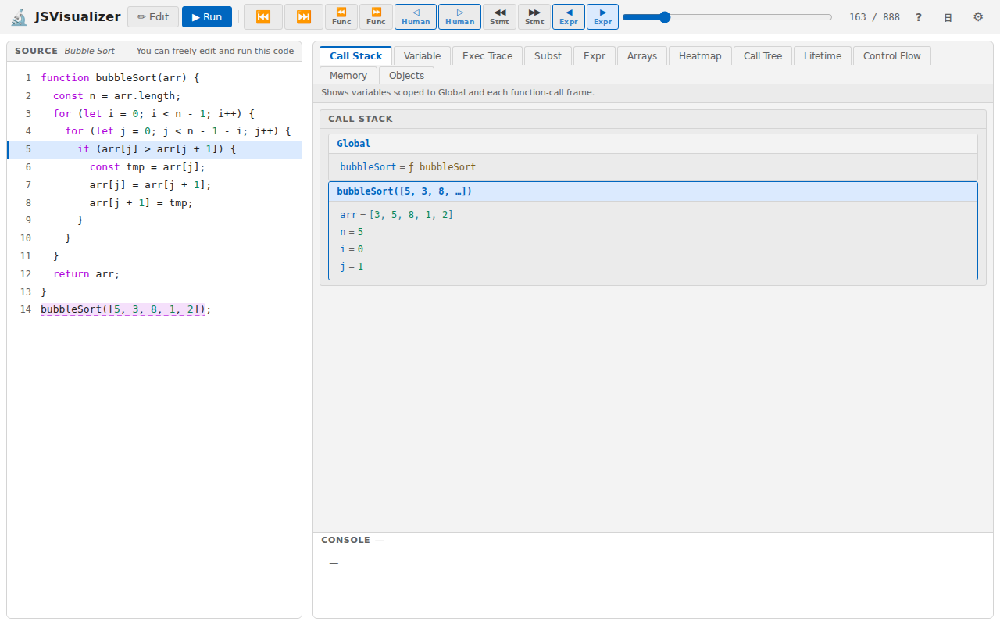
| Area | Contents |
|---|---|
| Top | The Edit and Run buttons, the sample selector (in Edit mode), and the stepping buttons and slider (in Run mode). At the right end: user manual (?), display language (EN / 日), and settings (⚙) |
| Left (Source) | The code. You can edit it in Edit mode; in Run mode it highlights where execution currently is |
| Right | The visualization views. Switch between them with the tabs at the top; a one-line description of the current view appears below the tabs |
| Bottom right (Console) | Output from console.log(). It stays visible whichever view is selected |
Drag the border between the left and right panes to resize them. Drag the top edge of the console to change its height.
2. Preparing code
When you first open the app, it contains a sample program (the Fibonacci sequence).
Choosing a sample
In Edit mode, pick one of 21 sample programs from the sample selector (drop-down) at the top of the screen.
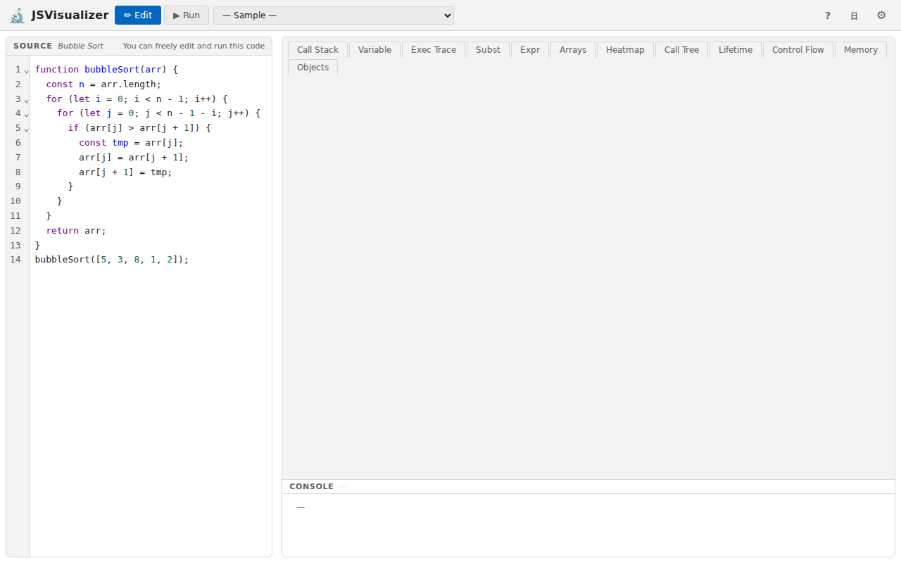
| Category | Samples |
|---|---|
| Search | Linear Search, Binary Search |
| Sort (basic) | Bubble Sort, Selection Sort |
| Sort (advanced) | Quick Sort, Merge Sort |
| Sort (objects) | Sort by numeric key, Sort by string key |
| Math / Algorithms | Euclid GCD (loop / recursive), Factorial, Fibonacci (recursive / DP) |
| Data Structures | Binary Tree, Linked List |
| Scope / Objects | Closure, Class & Inheritance |
| Study Tasks | Tasks used in an evaluation study (finding a bug, counting calls, tracing intermediate state, etc.) |
Writing your own code
In Edit mode you can freely edit the code on the left, or paste in code written elsewhere. When you are done, press “▶ Run”.
- The main syntax of ES2015 and later is supported (
let/const, arrow functions, classes, destructuring, template literals,for...of, etc.). - Use
console.log()to check results; output appears in the console. Browser features such as manipulating the page (DOM) or network access are not available. - Edited code is not saved. Reloading the page resets it, so keep a copy of any code you want to keep.
Opening a shared link
If you open JSVisualizer from a link that points to specific code (for example, one handed out in a class or in course materials), the app starts with that code loaded. The sample selector then lists only the linked code instead of the built-in samples (and cannot be changed when there is only one piece of code).
3. Edit mode and Run mode
| Button | Description |
|---|---|
| ✏ Edit | Switches to Edit mode, where you can edit the code freely. The sample selector is available only in this mode |
| ▶ Run | Runs the code and switches to Run mode. The program runs to completion at once and every step is recorded. You can then use the stepping buttons to move forward and backward to any point and look at the state at that moment |
After editing the code, press “Run” again to re-run it with your changes.
When an error occurs
If the code has a mistake, an error message appears below the code. The labels are in English, but the messages themselves are currently shown in Japanese only.
| Label | Meaning |
|---|---|
| Syntax Error | The code cannot run because of how it is written (a missing bracket, a typo, etc.). Numbers such as 21:9 in the message are the line and column of the mistake |
| Runtime Error | The code is written correctly, but a problem occurred while it was running (using an undefined variable, etc.). You can still step through everything up to just before the error |
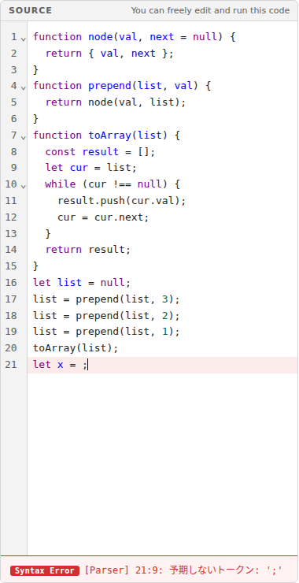
If execution exceeds 10,000 steps, it is stopped and reported as a runtime error, since the program may be stuck (for example, in a loop that never ends). You can step through everything up to the point where it stopped.
4. Stepping
In Run mode, the buttons at the top let you move execution forward or backward one step at a time. There are four kinds of buttons, each moving by a different amount, and each has a “back” and a “forward” version.
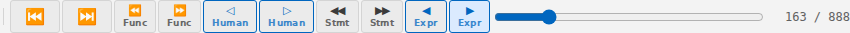
Four granularities
| Buttons | Granularity | One press moves |
|---|---|---|
| ◀ Expr / ▶ Expr | Finest | One expression evaluation at a time. For a[j] > a[j + 1] it stops at the value of a[j], the value of a[j + 1], and then the result of the comparison. Use it to see the order in which an expression is computed |
| ◁ Human / ▷ Human | Medium (start here) | One meaningful change — the kind of thing a person would write down when tracing on paper: an assignment, an if condition, a loop condition or update, a function call, and so on |
| ◀◀ Stmt / ▶▶ Stmt | Coarse | One statement at a time, skipping the detailed computation inside it |
| ⏪ Func / ⏩ Func | Coarsest | Straight to the next point where a function is entered or returns. Use it to follow the overall flow of recursive calls |
If in doubt, step with “▷ Human”. Use “▶ Expr” only where you want more detail, and “▶▶ Stmt” or “⏩ Func” to fast-forward through loops and function calls.
Other controls
| Control | Description |
|---|---|
| ⏮ | Goes back to the start (the beginning of execution) |
| ⏭ | Goes to the end (where execution finished) |
| Slider | Drag the handle to jump to any point |
Step counter (e.g. 180 / 874) | The current step out of the total, counted in the finest (Expr) steps |
Keyboard shortcuts
You can also use these keys (upper-case letters mean holding Shift).
| Granularity | Back | Forward |
|---|---|---|
| Expr | ← or b | → or n |
| Human | H | h |
| Stmt | V | v |
| Func | F | f |
| Start / End | Home | End |
Keys 1–9 switch to the first to ninth view tab from the left.
5. Code highlighting
In Run mode, the code on the left shows where execution is with three kinds of marks.
| Mark | Meaning |
|---|---|
| Blue band (blue bar at the left of the line) | The line being executed |
| Orange background | The expression being evaluated |
| Purple dashed underline | While inside a function, the expression that called that function (the call site) |

bubbleSort was called from line 14 (purple dashes)
fib came from fib(n - 1) (purple dashes)6. Visualization views
The right side of the screen shows the program’s behavior in many different forms. Use the tabs at the top to switch among 12 views. Which view is easiest to understand depends on what you want to know, so try several and find the ones that work for you.
- Some views cannot be used with some code; their tabs are grayed out (for example, “Subst” and “Call Tree” are unavailable for code without functions).
- The tab you used last is selected again the next time you open the app.
How the views are organized
The 12 views can be organized along two dimensions: what you look at and how time is shown.
What you look at falls into three groups:
- State: the values the program holds at a given moment (variable values, the functions being called, the contents of memory)
- Behavior: how the program proceeds over time (the order in which expressions are computed, the order and number of times statements run, the order of function calls). Expressions, statements, and functions correspond to the Expr, Stmt, and Func granularities of stepping
- Arrays and objects: data that holds several values together
How time is shown comes in two kinds:
- Views of one moment (animation): show only the current moment and change each time you step
- Views of the whole run (timeline): use one direction of the screen for the flow of time and show the course of execution all at once, with the current moment highlighted
| What you look at | One moment | Whole run | |
|---|---|---|---|
| State | Variable values | Variable | Exec Trace |
| Functions being called | Call Stack | Lifetime | |
| Contents of memory | Memory | — | |
| Behavior | Computing expressions | Expr | Subst |
| Running statements | Control Flow | Heatmap | |
| Calling functions | Call Tree | — | |
| Arrays and objects | Arrays | Arrays | Exec Trace |
| Objects | Objects | — | |
Comparing the same thing in a “one moment” view and a “whole run” view deepens understanding. For example, to see how a variable changes inside a loop, check its current value in “Variable” while lining up the values of each iteration in “Exec Trace”.
Views of state
| Tab | Time | Contents |
|---|---|---|
| Variable | One moment | A table of code lines (rows) × variables (columns). Each row shows the variable values when that line last ran; values that changed since the previous step are in bold orange. You can show/hide columns and reorder them by dragging |
| Exec Trace | Whole run | Lists the steps where assignments, condition tests, and the like happened, in execution order from top to bottom, with the variable values at each step and whether each condition was true or false. For code that uses arrays, each step also shows a small diagram of the array and where variables such as i and j point, so you can compare iterations |
| Call Stack | One moment | Shows all current variable values, grouped into the global scope and each function call in progress. Inside functions you can see that every call has its own variables |
| Lifetime | Whole run | With time running horizontally and call depth vertically, shows each function call as a band from when it started to when it ended. Each band is labeled with the function name, its arguments, and that call’s variable values, showing how long arguments and local variables exist. The vertical dashed line marks the current moment |
| Memory | One moment | Draws variables (the stack) and the actual arrays and objects (the heap) separately, with arrows showing which array or object each variable refers to |
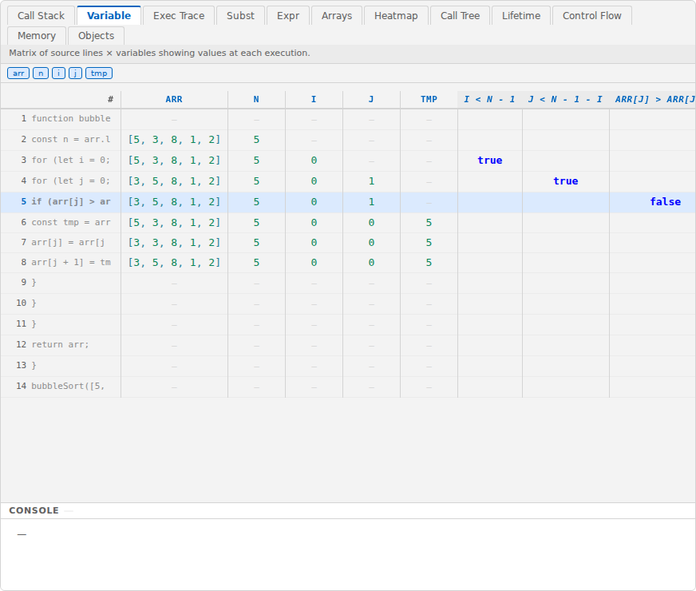
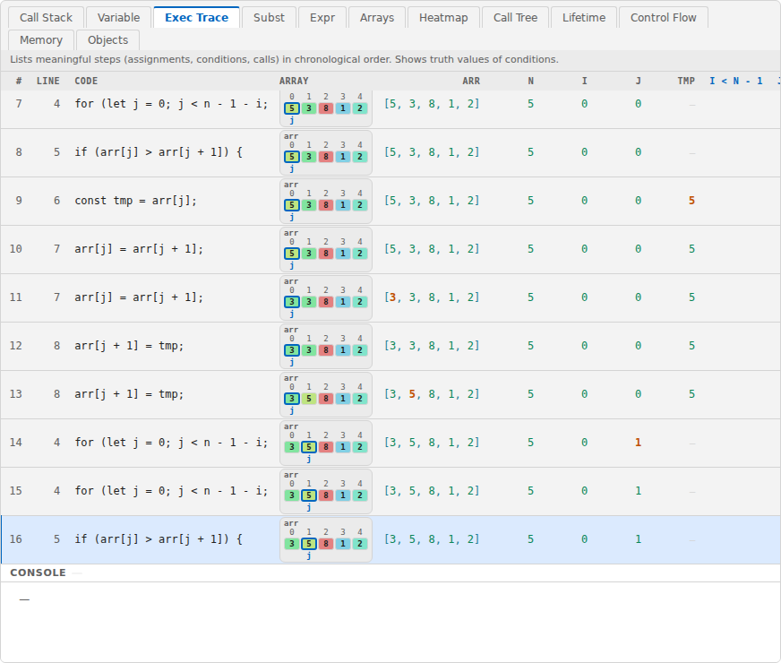
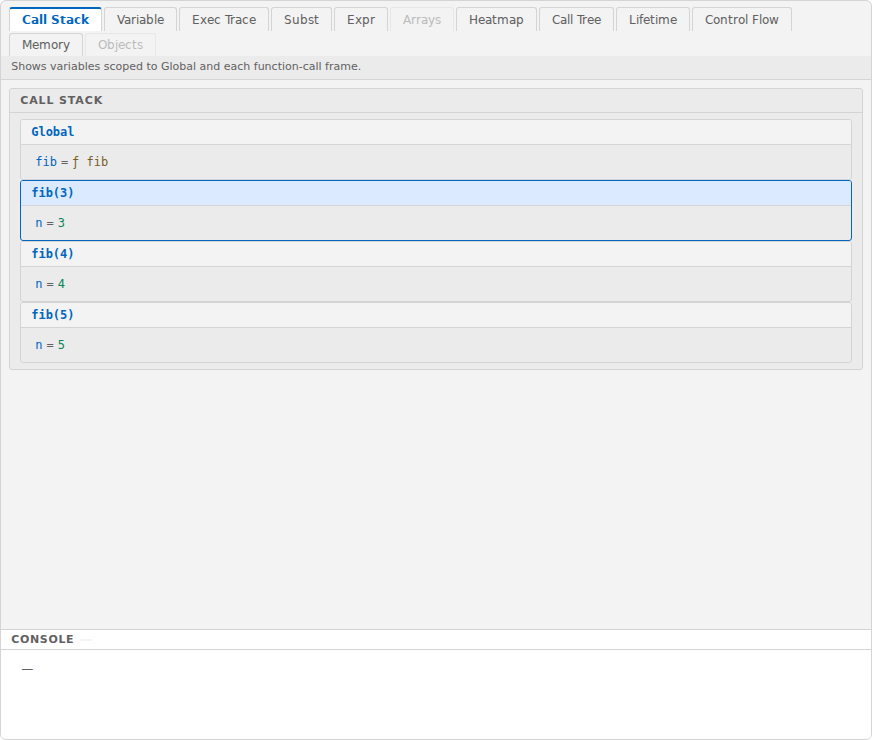
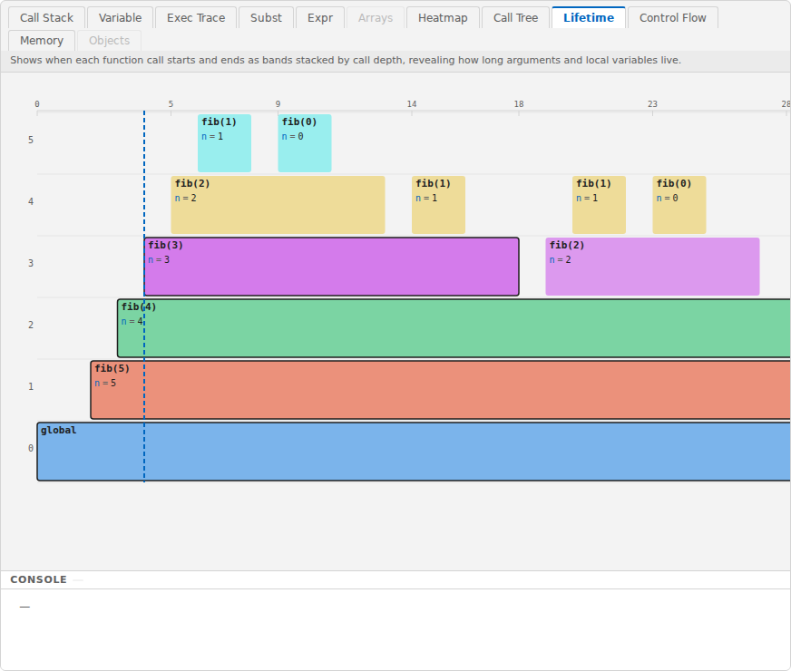
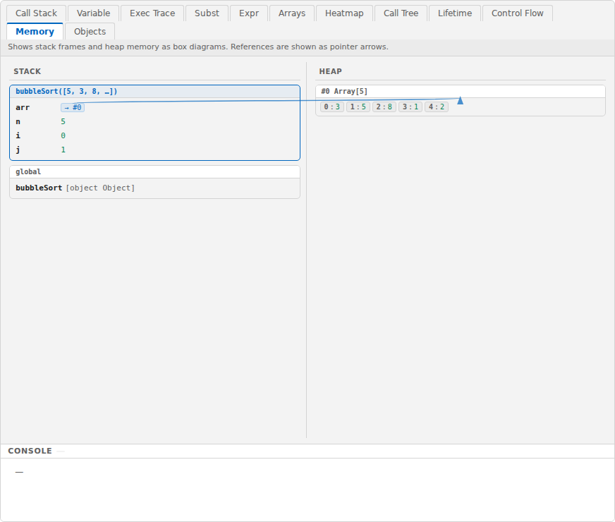
Views of behavior
| Tab | Time | Contents |
|---|---|---|
| Expr | One moment | Shows how the one-line expression being computed turns into its final value as its parts are replaced by values. Orange marks the part just replaced; bold blue marks the part computed next. Parts skipped by || or && stay as they are |
| Subst | Whole run | Shows, from top to bottom, how recursive calls expand as each call is replaced by the expression it returns: fib(5) → fib(4) + fib(3) → … |
| Control Flow | One moment | A flowchart connecting the lines that ran, with the current line emphasized. Loop-back flows are dashed orange lines and branches that never ran are grayed out |
| Heatmap | Whole run | Shows how many times each line ran, as color intensity and “count so far / total”. The dots on the right show when each line ran, so lines repeated in loops stand out at a glance |
| Call Tree | One moment | Shows function calls as a tree. Each node shows arguments and the return value; dashed gray means not yet called, thick blue means running, and green means finished. The cost at the bottom left is the number of calls in that node’s subtree (including itself) — handy for checking how many times a recursive function is called |
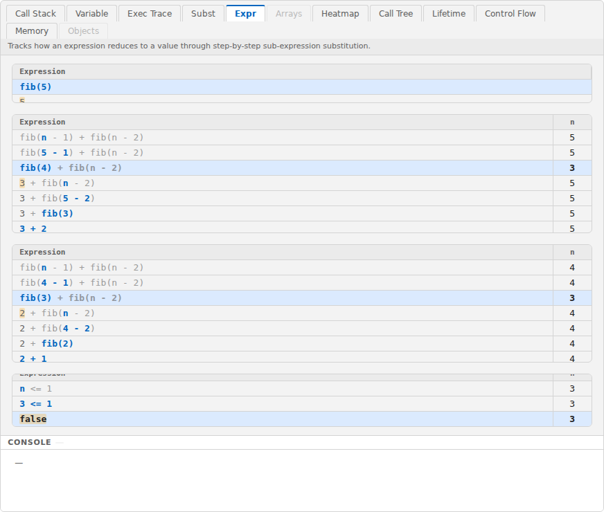
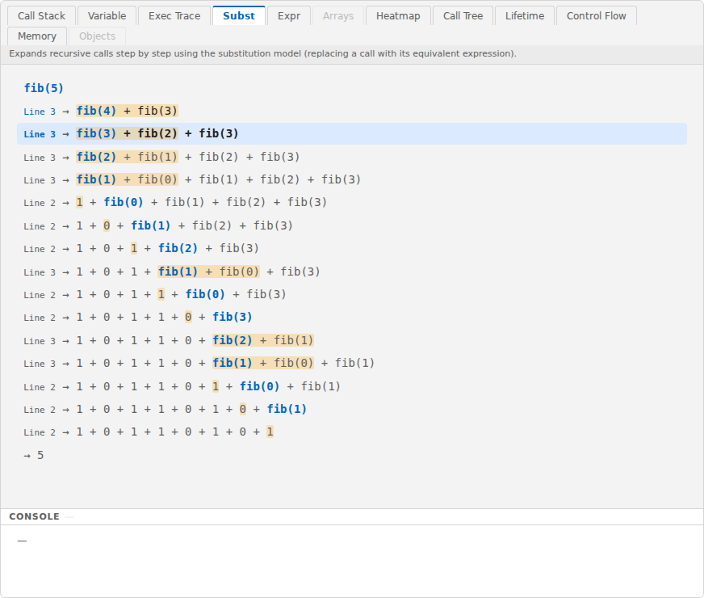
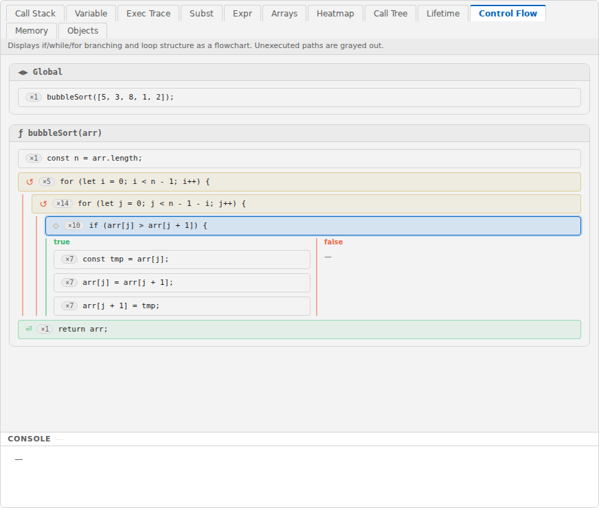
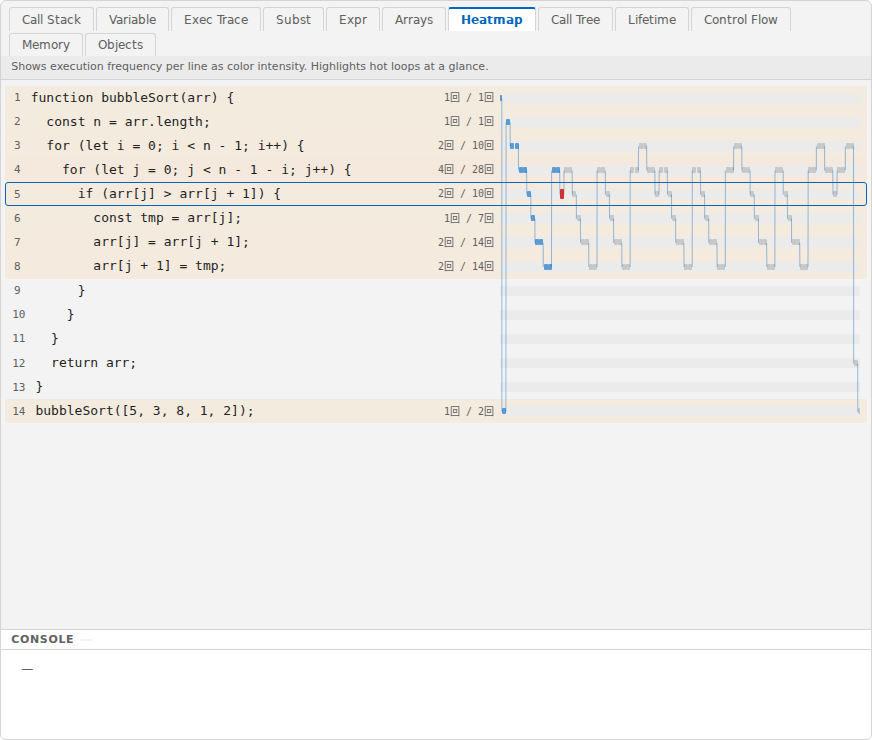
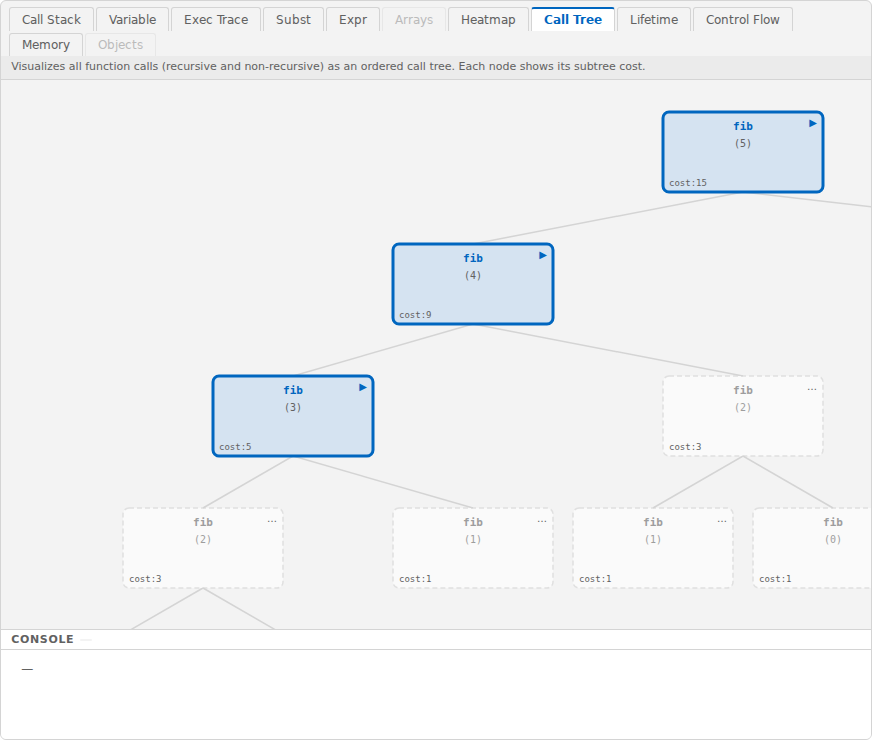
Views of arrays and objects
| Tab | Time | Contents |
|---|---|---|
| Arrays | One moment | Shows array elements as cells colored by value. For variables used as indexes, such as i and j, the element they point to is marked below the cells. Choose which arrays to show with the buttons at the top. To see an array over the whole run, use “Exec Trace” |
| Objects | One moment | Shows references between arrays and objects as a graph — well suited to linked lists and trees |
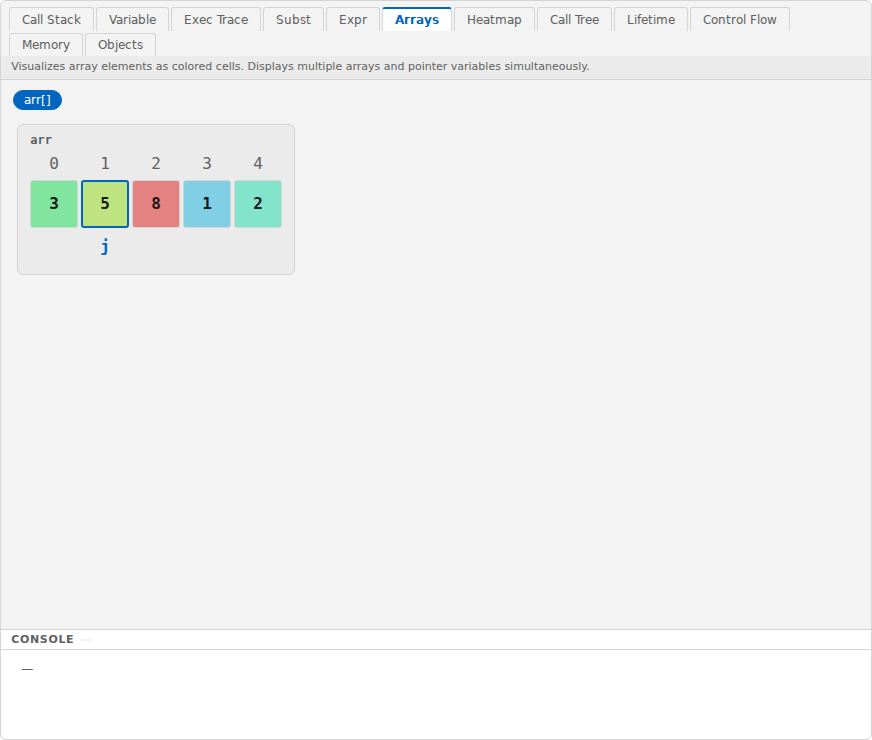
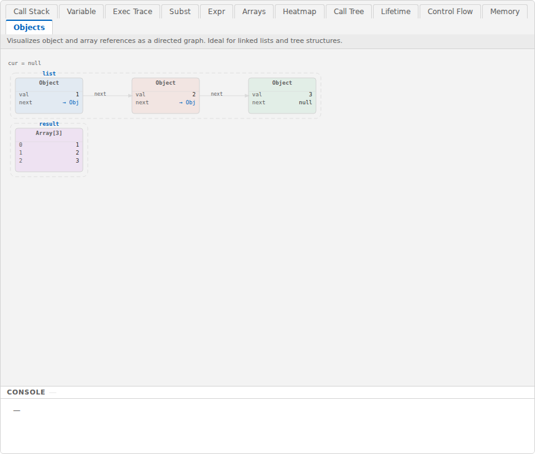
The tab order differs from the grouping above (from the left: Call Stack, Variable, Exec Trace, Subst, Expr, Arrays, Heatmap, Call Tree, Lifetime, Control Flow, Memory, Objects). This organization follows Table 1 of Tanaka & Ueda, “Proposal for Program Execution Environment that Visualizes Program Behavior Using Multiple Views” (IS-26-049).
7. Other features
| Button | Description |
|---|---|
| ? at the top right | Opens this manual (in Japanese or English, matching the display language) |
| EN / 日 at the top right | Switches buttons and tabs between English and Japanese |
| ⚙ at the top right | Switches between the light and dark themes. “Session Log” at the bottom of the settings panel is a feature for evaluation studies and is not needed in normal use (it records only inside your browser and can save the log as a JSON or CSV file) |
The theme, language, pane widths, console height, and last-used tab are saved in your browser and restored the next time you open the app.
8. Troubleshooting
| Problem | What to do |
|---|---|
| The stepping buttons are not shown | You are in Edit mode. Press “▶ Run” |
| The sample selector is not shown | You are in Run mode. Press “✏ Edit” |
| The sample selector cannot be changed | You opened a link to a single piece of code. To use the built-in samples, open https://tntetsu.github.io/JSVisualizer/ again |
| A Runtime Error says execution was stopped because it exceeded the maximum number of steps (10,000; the message is in Japanese: 「実行が最大ステップ数 10,000 を超えたため停止しました」) | A loop or recursion may never end. Step through up to where it stopped and check the exit condition. If the program simply does a lot of work, use smaller data |
| Keyboard shortcuts do not work | If the cursor is in an input area such as the code editor, keys go there. In Run mode, click somewhere else on the screen first |
| A tab is grayed out | That view cannot be used with this code (e.g., “Subst” and “Call Tree” for code without functions) |
| The screen does not display correctly | Use an up-to-date desktop browser; reloading the page may help (smartphones are not supported) |